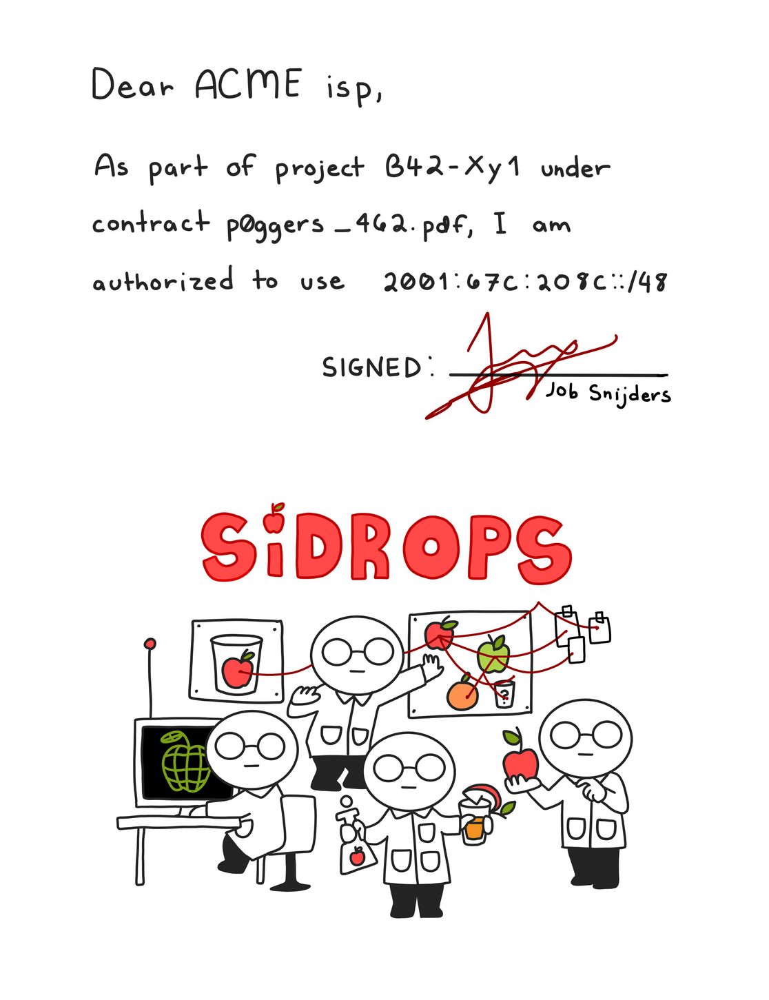

Navigation
index
modules
|
drafts
|
next
|
RPKI Discard Origin Authorizations 0.0.3.dev46 documentation
»
RPKI Discard Origin Authorizations
RPKI Discard Origin Authorizations
¶

Internet Drafts
draft-spaghetti-sidrops-rpki-doa
Object Prototyping API Reference